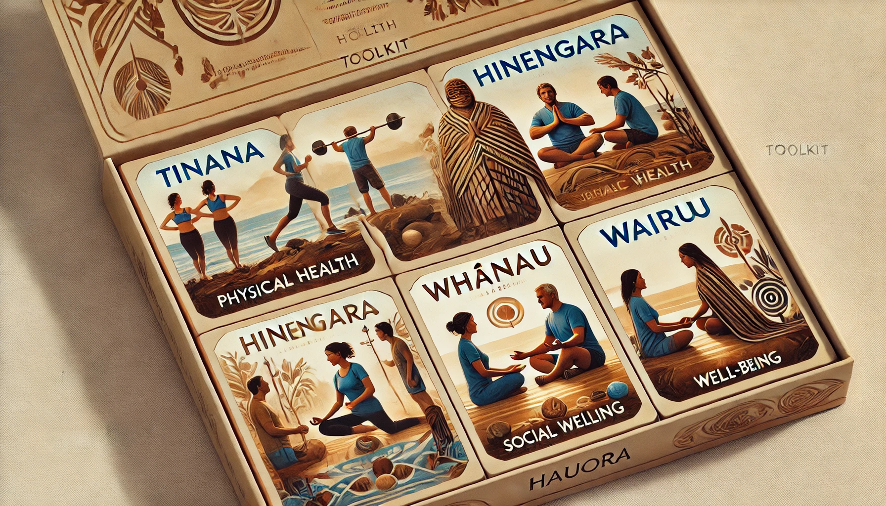

Māori Language of the Week
Learn a new Māori word each week! This week's word is:
Kia ora (Hello)
Meaning: Hello, or be well.
Mental Health and Well-being Toolkit
Explore resources focused on hauora (holistic health) through the lens of Māori values.
- Tinana - Physical health resources and exercises
- Hinengaro - Mental and emotional well-being tips
- Whānau - Social connection and community resources
- Wairua - Spiritual well-being and mindfulness practices

Accessibility Features
This page includes accessibility features to enhance user experience for everyone.
Interactive Quiz: Te Tiriti o Waitangi
Test your knowledge about Te Tiriti o Waitangi:
Question: What year was Te Tiriti o Waitangi signed?